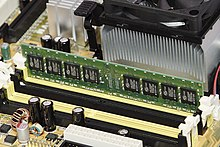

หน่วยเก็บข้อมูลคอมพิวเตอร์ มักเรียกว่าหน่วยเก็บข้อมูลหรือหน่วยความจำ เป็นเทคโนโลยีประกอบด้วยส่วนประกอบของคอมพิวเตอร์ และสื่อบันทึกที่ใช้เก็บข้อมูลดิจิตอล[1]:15-16
หน่วยประมวลผลกลาง (CPU) ของคอมพิวเตอร์คือสิ่งที่จัดการข้อมูลโดยการคำนวณ ในทางปฏิบัติคอมพิวเตอร์ทุกเครื่องใช้ลำดับชั้นการจัดเก็บข้อมูล[1]:468-473 ซึ่งทำให้ตัวเลือกการจัดเก็บข้อมูลที่รวดเร็ว มีราคาแพง และมีขนาดเล็กใกล้เคียงกับ CPU และตัวเลือกที่มีขนาดใหญ่และราคาถูกกว่าที่ไกลออกไป
